← 返回阅读库 · 原论文目录
论文讲解阅读文档 · 论文精读 · v251
梁文锋带DeepSeek登上Nature封面！隐藏亮点大揭秘！
视频时长 00:08:04；讲解文字 2,930 字符；提取讲解画面 122 张。按视频原顺序阅读，每段文字保留时间戳。
文字来自整段视频的自动语音转写，按自然停顿分段，并与 PPT / 论文页面 / 演示画面对齐。未将讲解压缩为摘要；术语、数字和口述公式请结合画面及原论文核对。 阅读稿已校正规范部分明确术语误识别；原始逐字稿和每处修改记录另行保留。
讲解画面为源视频截图（640×360），不是可编辑 PPT 文件。全片按每秒 2 帧扫描内容变化，逐步展开页保留；连续动画保留代表画面。清晰度受源视频限制。
下载完整资料包 · 含离线 HTML、PDF、Word、全部 PPT 画面和字幕。
原论文与材料
DeepSeek-R1: Incentivizing Reasoning Capability in LLMs via Reinforcement Learning · 下载完整 PDF（86 页）
DeepSeek-R1 incentivizes reasoning in LLMs through reinforcement learning · 下载完整 PDF（11 页）
按时间阅读
00:00:00–00:00:01 · 画面 001
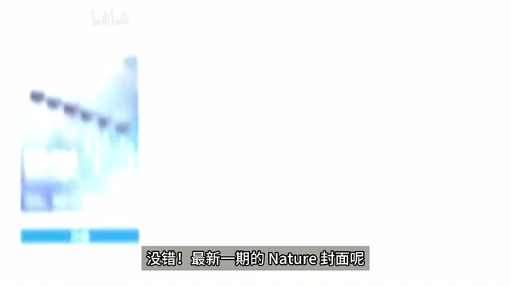
00:00:00–00:00:01 · 画面 001没错，最新一期的 Nature 封面正是 DeepSeek-R1 的研究，梁文锋亲自挂帅通讯作者。这不是简单的技术突破，而是中国 AI 从跟跑到领跑的标志性事件。更宏观的视角来看，DeepSeek 这次登 Nature 也是对中国 AI 只能做应用不能做基础研究这种偏见的有力反驳。
00:00:01–00:00:03 · 画面 002
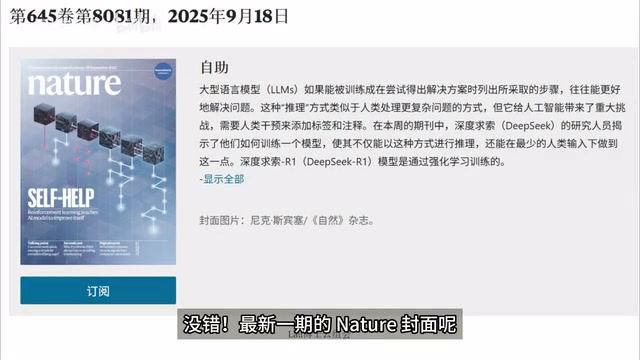
00:00:01–00:00:03 · 画面 00200:00:03–00:00:07 · 画面 003
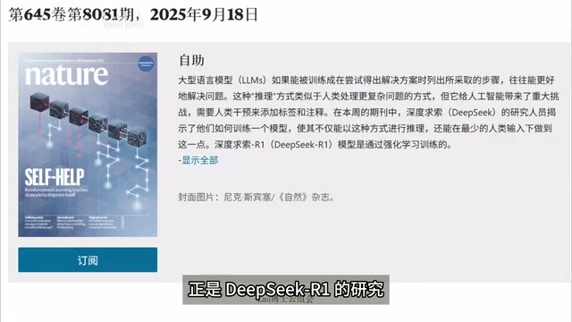
00:00:03–00:00:07 · 画面 00300:00:07–00:00:11 · 画面 004
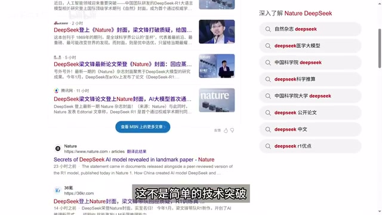
00:00:07–00:00:11 · 画面 00400:00:11–00:00:15 · 画面 005
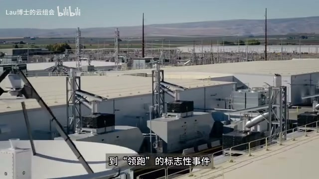
00:00:11–00:00:15 · 画面 00500:00:15–00:00:19 · 画面 006
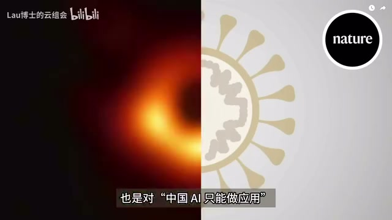
00:00:15–00:00:19 · 画面 00600:00:19–00:00:23 · 画面 007
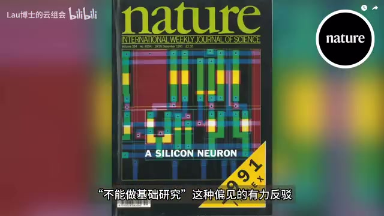
00:00:19–00:00:23 · 画面 007过去很多人觉得中国 AI 只会在国外的开源模型的基础上做二次开发。
00:00:23–00:00:27 · 画面 008
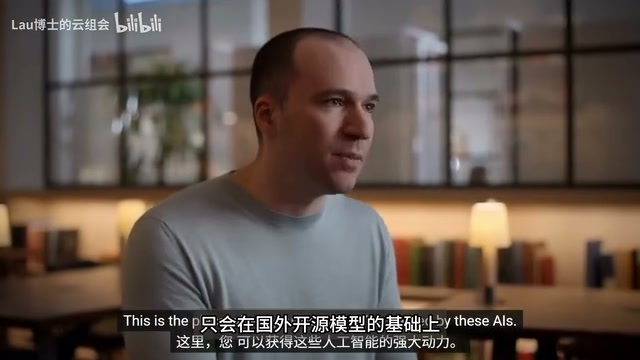
00:00:23–00:00:27 · 画面 008但 DeepSeek 用一篇顶刊论文证明。
00:00:27–00:00:31 · 画面 009
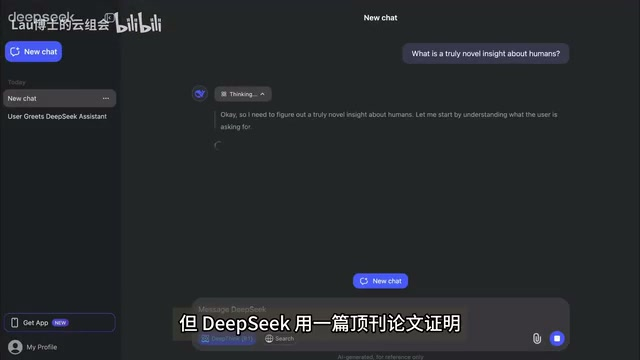
00:00:27–00:00:31 · 画面 009中国的团队能在 AI 的基础理论、核心算法上也做出世界级的创新
00:00:31–00:00:35 · 画面 010
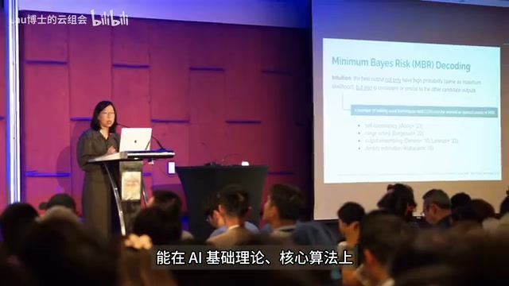
00:00:31–00:00:35 · 画面 010要知道 Nature 作为全球顶级的科研期刊
00:00:35–00:00:39 · 画面 011
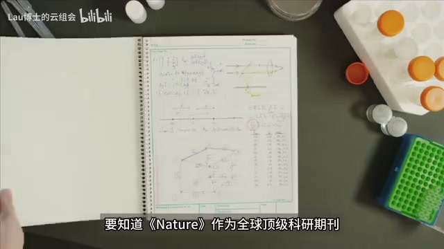
00:00:35–00:00:39 · 画面 011对 AI 论文的审核堪称严苛
00:00:39–00:00:43 · 画面 012
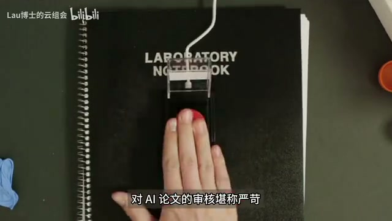
00:00:39–00:00:43 · 画面 012此前能登上它的大模型研究大多数是来自 OpenAI、谷歌等欧美团队
00:00:43–00:00:47 · 画面 013
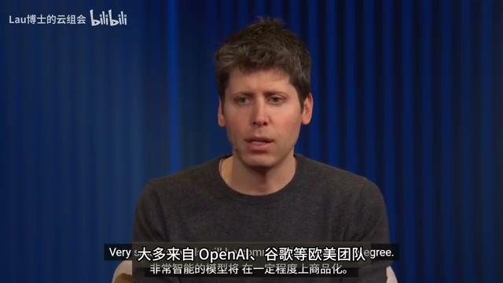
00:00:43–00:00:47 · 画面 013而这次 DeepSeek 凭借着 DeepSeek-R1 模型
00:00:47–00:00:51 · 画面 014
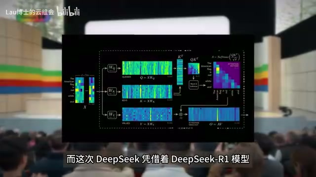
00:00:47–00:00:51 · 画面 014用无人类标注推理这一核心创新
00:00:51–00:00:55 · 画面 015
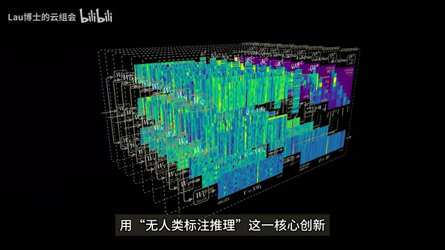
00:00:51–00:00:55 · 画面 015真正打破了欧美在高端 AI 理论研究上的垄断
00:00:55–00:00:57 · 画面 016
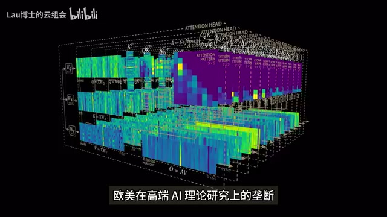
00:00:55–00:00:57 · 画面 016那今天我们趁着 DeepSeek 登上 Nature
00:00:57–00:01:01 · 画面 017
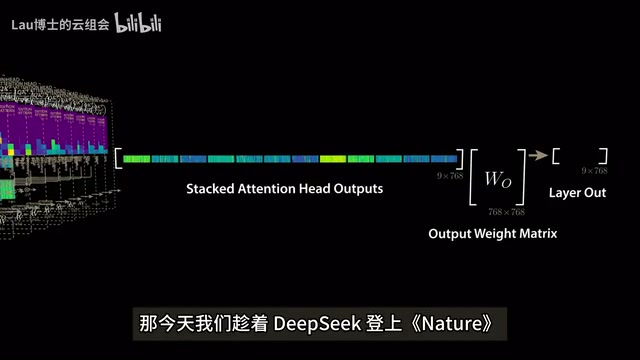
00:00:57–00:01:01 · 画面 017一起来回顾这篇核弹级的研究
00:01:01–00:01:05 · 画面 018
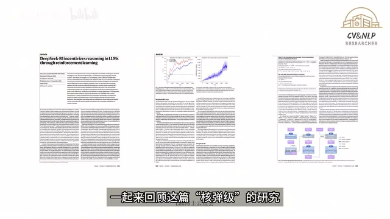
00:01:01–00:01:05 · 画面 018看中国团队如何登上世界之巅还有哪些鲜为人知的隐藏亮点
00:01:05–00:01:09 · 画面 019
00:01:05–00:01:09 · 画面 019云组会论文精读系列
00:01:09–00:01:10 · 画面 020
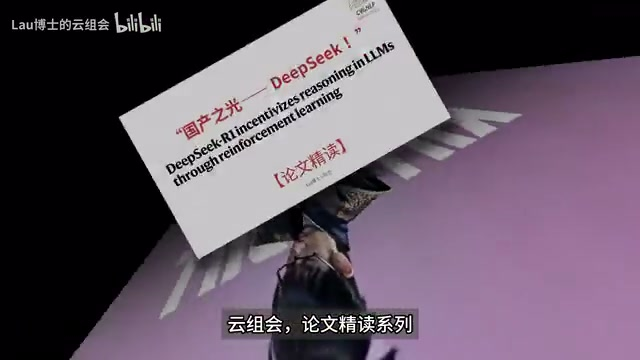
00:01:09–00:01:10 · 画面 020国产之光
00:01:10–00:01:14 · 画面 021
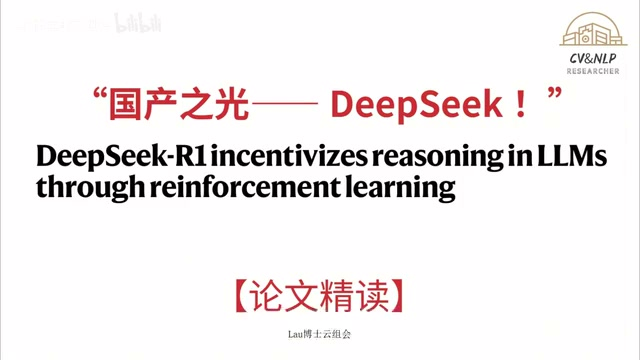
00:01:10–00:01:14 · 画面 021DeepSeek欢迎来到 Lau 博士的云组会
00:01:14–00:01:18 · 画面 022
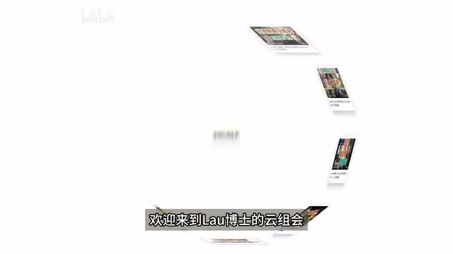
00:01:14–00:01:18 · 画面 022我们每周都将至少有一篇高质量的论文精读发布出来
00:01:18–00:01:22 · 画面 023
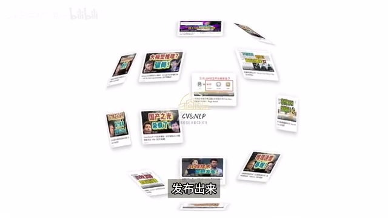
00:01:18–00:01:22 · 画面 023相信在一系列的论文学习以后你就能成为人工智能领域的专家
00:01:22–00:01:26 · 画面 024
00:01:22–00:01:26 · 画面 02400:01:26–00:01:29 · 画面 025
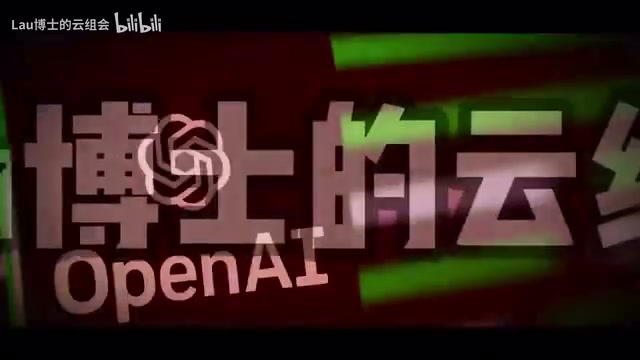
00:01:26–00:01:29 · 画面 02500:01:29–00:01:33 · 画面 026
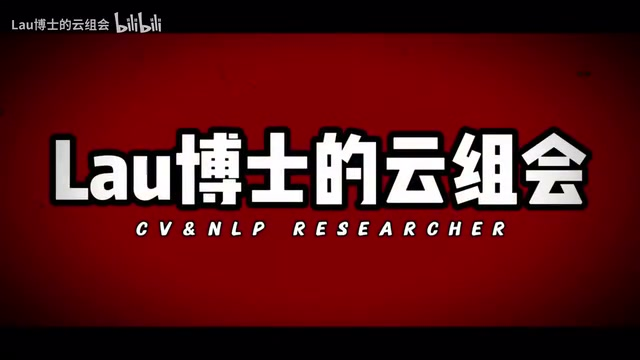
00:01:29–00:01:33 · 画面 026提起 DeepSeek很多人可能首先是想到它之前在长文本处理上的突破
00:01:33–00:01:37 · 画面 027
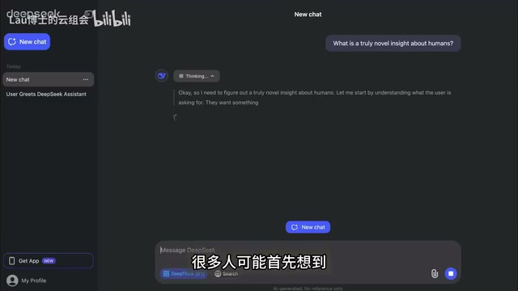
00:01:33–00:01:37 · 画面 027比如把大模型上下文拉到 100 万 Tokens
00:01:37–00:01:41 · 画面 028
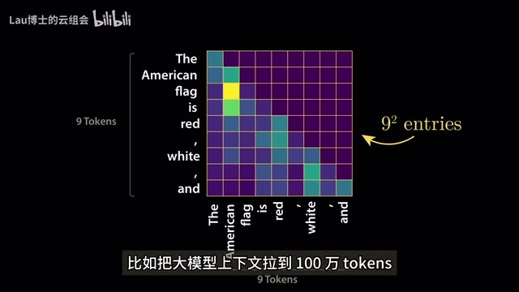
00:01:37–00:01:41 · 画面 028相当于一次性读完整套三体
00:01:41–00:01:45 · 画面 029
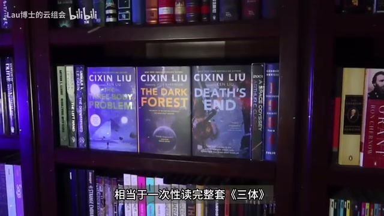
00:01:41–00:01:45 · 画面 029但这次 DeepSeek-R1 的论文曝光让我们看到它更深厚的技术积淀
00:01:45–00:01:49 · 画面 030
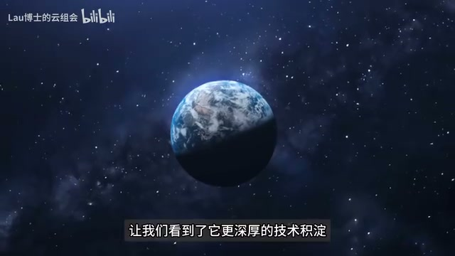
00:01:45–00:01:49 · 画面 030它的核心优势可以总结为三大突破和两大隐藏亮点
00:01:49–00:01:51 · 画面 031
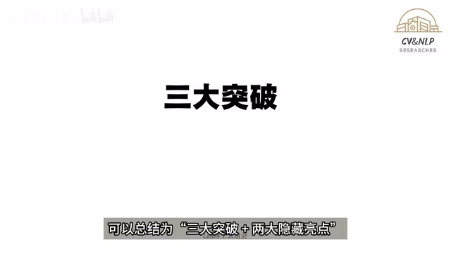
00:01:49–00:01:51 · 画面 031首先来看三大核心突破
00:01:51–00:01:54 · 画面 032
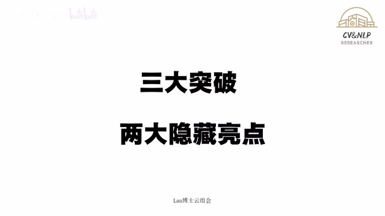
00:01:51–00:01:54 · 画面 032突破一,无标注推理进化
00:01:54–00:01:58 · 画面 033
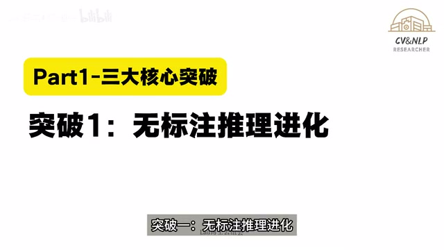
00:01:54–00:01:58 · 画面 033传统的模型要学推理得为大量人类写的解题步骤
00:01:58–00:01:59 · 画面 034
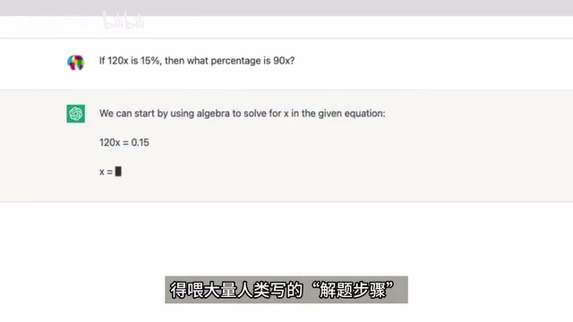
00:01:58–00:01:59 · 画面 03400:01:59–00:02:01 · 画面 035
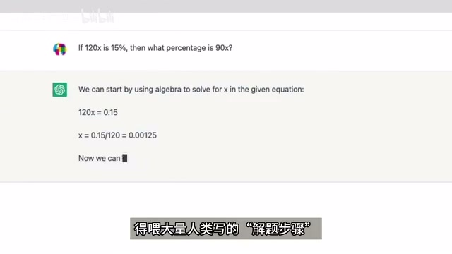
00:01:59–00:02:01 · 画面 035比如教他解一元二次方程
00:02:01–00:02:02 · 画面 036
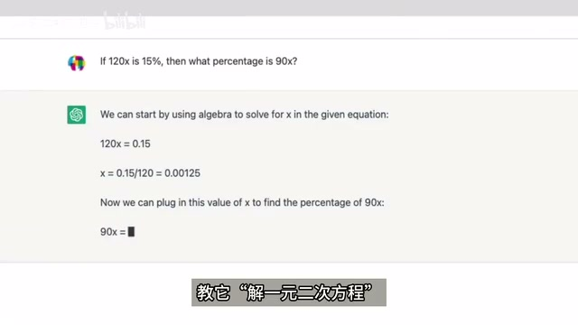
00:02:01–00:02:02 · 画面 03600:02:02–00:02:03 · 画面 037
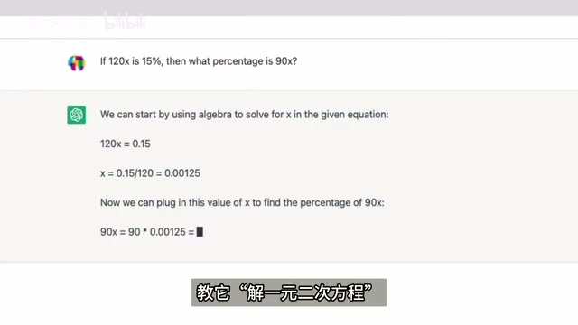
00:02:02–00:02:03 · 画面 037要先算判别式
00:02:03–00:02:07 · 画面 038
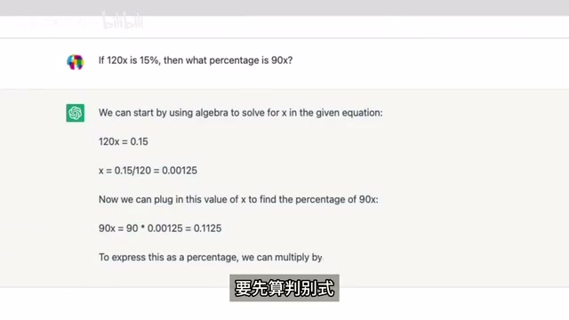
00:02:03–00:02:07 · 画面 038但 DeepSeek 完全不用他只需要知道最终答案对不对
00:02:07–00:02:10 · 画面 039
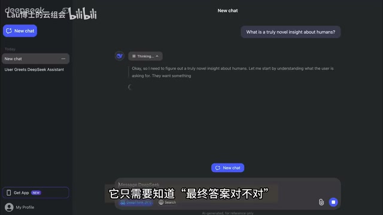
00:02:07–00:02:10 · 画面 039就能够自己探索步骤甚至进化出人类没教过的策略
00:02:10–00:02:13 · 画面 040
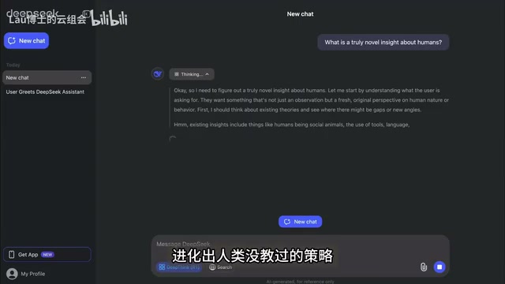
00:02:10–00:02:13 · 画面 040比如在解数学题的时候
00:02:13–00:02:15 · 画面 041
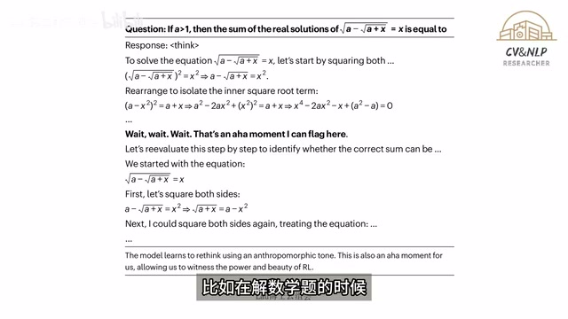
00:02:13–00:02:15 · 画面 041他甚至会用 wait再写一遍这样的反思性语言
00:02:15–00:02:17 · 画面 042
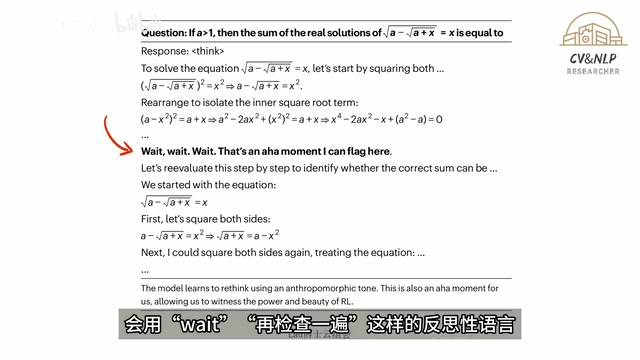
00:02:15–00:02:17 · 画面 04200:02:17–00:02:25 · 画面 043
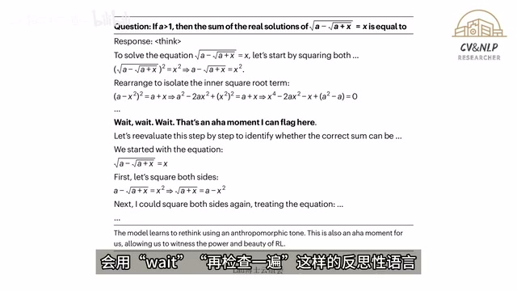
00:02:17–00:02:25 · 画面 043发现之前的计算错误，这种自我纠错的能力是传统的监督学习模型根本做不到的。突破 2 ：跨领域推理全能，一般模型在数学上强可能在代码或 STEM 的领域就弱，但 DeepSeek 做到了全开花。在 AIME2024 的数学竞赛当中，Pass@1 的准确率达到了 79.8%远超人类的平均水平。在 CodeForces 的编程竞赛当中，评级冲到了 2029 分
00:02:25–00:02:26 · 画面 044
00:02:25–00:02:26 · 画面 04400:02:26–00:02:28 · 画面 045
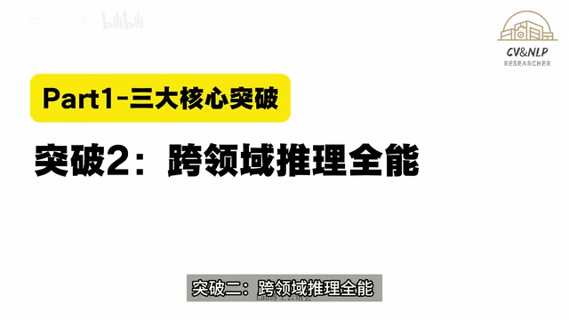
00:02:26–00:02:28 · 画面 04500:02:28–00:02:29 · 画面 046
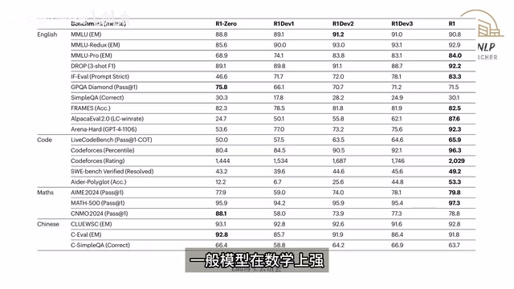
00:02:28–00:02:29 · 画面 04600:02:29–00:02:30 · 画面 047
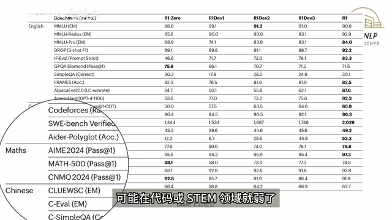
00:02:29–00:02:30 · 画面 04700:02:30–00:02:33 · 画面 048
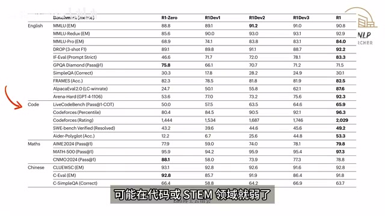
00:02:30–00:02:33 · 画面 04800:02:33–00:02:38 · 画面 049
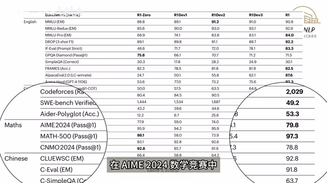
00:02:33–00:02:38 · 画面 04900:02:38–00:02:42 · 画面 050
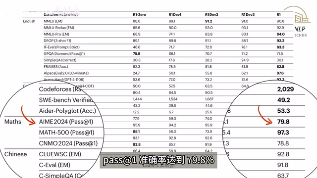
00:02:38–00:02:42 · 画面 05000:02:42–00:02:44 · 画面 051
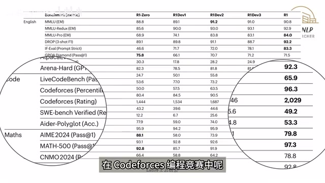
00:02:42–00:02:44 · 画面 05100:02:44–00:02:48 · 画面 052
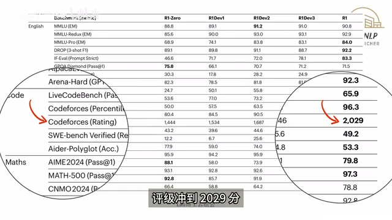
00:02:44–00:02:48 · 画面 052能解决不少中等难度的算法题，甚至在研究生级别的生物物理题上也能给出精准的推理过程。这种跨领域的通用性说明它的推理能力并不是死记硬背，而是真正的举一反三
00:02:48–00:02:55 · 画面 053
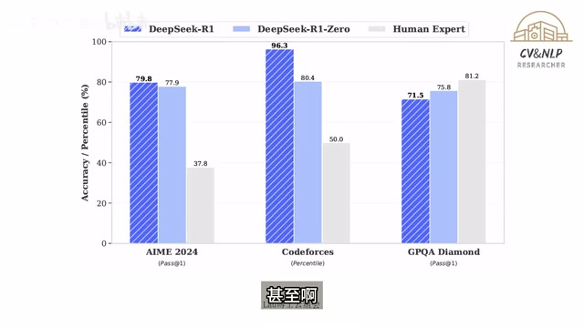
00:02:48–00:02:55 · 画面 05300:02:55–00:02:56 · 画面 054
00:02:55–00:02:56 · 画面 05400:02:56–00:02:58 · 画面 055
00:02:56–00:02:58 · 画面 05500:02:58–00:03:01 · 画面 056
00:02:58–00:03:01 · 画面 056突破三 ：超强的性能效率。传统的强化学习训练很容易费资源，但 DeepSeek 用 GRPO 的算法优化了训练过程。相比传统的 PPO 算法，GRPO 不用单独训练价值网络，直接通过组内奖励分布计算优势，减少了一半以上的计算量
00:03:01–00:03:03 · 画面 057
00:03:01–00:03:03 · 画面 05700:03:03–00:03:18 · 画面 058
00:03:03–00:03:18 · 画面 058而且在解码的阶段，它能够根据问题的复杂度动态的分配 Tokens。简单的题少用 Tokens 快速出答案，复杂的题就多花 Tokens 深入推理，避免小题大作的资源浪费
00:03:18–00:03:20 · 画面 059
00:03:18–00:03:20 · 画面 05900:03:20–00:03:24 · 画面 060
00:03:20–00:03:24 · 画面 06000:03:24–00:03:26 · 画面 061
00:03:24–00:03:26 · 画面 06100:03:26–00:03:28 · 画面 062
00:03:26–00:03:28 · 画面 06200:03:28–00:03:32 · 画面 063
00:03:28–00:03:32 · 画面 063再看两个容易被忽略的隐藏亮点。亮点一：小模型的蒸馏能力。DeepSeek 没有把技术只留在大模型上，而是通过蒸馏技术把 DeepSeek-R1 的推理能力压缩到了小模型里。这些小模型的推理能力甚至超过了其他团队专门做过指令微调的大模型，而且能耗更低，部署成本更便宜。这对工业界来说太重要了，不是所有的场景都需要千亿参数的大模型，就像智能客服
00:03:32–00:03:35 · 画面 064
00:03:32–00:03:35 · 画面 06400:03:35–00:03:37 · 画面 065
00:03:35–00:03:37 · 画面 06500:03:37–00:03:47 · 画面 066
00:03:37–00:03:47 · 画面 06600:03:47–00:03:51 · 画面 067
00:03:47–00:03:51 · 画面 06700:03:51–00:04:05 · 画面 068
00:03:51–00:04:05 · 画面 068教育答疑这些场景用蒸馏后的小模型就能够满足需求，大大的降低了 AI 落地的门槛。亮点二：安全与实用性兼顾。很多强推理的模型容易被越狱生成危险的内容，但 DeepSeek 做了双重防护。一方面在训练当中加入了安全奖励机制，过滤了有害的输出，另一方面搭配风险控制系统以后，安全的级别能达到 GPT-4o 的水平。更贴心的是它还解决了多元混合的问题，之前的 DeepSeek 就有在
00:04:05–00:04:06 · 画面 069
00:04:05–00:04:06 · 画面 06900:04:06–00:04:10 · 画面 070
00:04:06–00:04:10 · 画面 07000:04:10–00:04:14 · 画面 071
00:04:10–00:04:14 · 画面 07100:04:14–00:04:18 · 画面 072
00:04:14–00:04:18 · 画面 07200:04:18–00:04:22 · 画面 073
00:04:18–00:04:22 · 画面 07300:04:22–00:04:26 · 画面 074
00:04:22–00:04:26 · 画面 07400:04:26–00:04:30 · 画面 075
00:04:26–00:04:30 · 画面 075中文的回答理会混英文，而 DeepSeek-R1 通过语言的一致性奖励让输出更符合人类的阅读习惯。不管是写报告还是答问题都不会出现中英混杂的尴尬。光说技术还不够，实验的数据才是硬实力。DeepSeek-R1 在 20 多个国际权威的 benchmark 上面的表现几乎每一下都能打，尤其是在硬骨头的任务上优势特别明显。我们挑了几个关键领域的亮点结果带给大家直观感受它的实力
00:04:30–00:04:34 · 画面 076
00:04:30–00:04:34 · 画面 07600:04:34–00:04:36 · 画面 077
00:04:34–00:04:36 · 画面 07700:04:36–00:04:37 · 画面 078
00:04:36–00:04:37 · 画面 07800:04:37–00:04:41 · 画面 079
00:04:37–00:04:41 · 画面 07900:04:41–00:04:42 · 画面 080
00:04:41–00:04:42 · 画面 08000:04:42–00:04:46 · 画面 081
00:04:42–00:04:46 · 画面 08100:04:46–00:04:50 · 画面 082
00:04:46–00:04:50 · 画面 08200:04:50–00:04:54 · 画面 083
00:04:50–00:04:54 · 画面 08300:04:54–00:04:58 · 画面 084
00:04:54–00:04:58 · 画面 084实验 1 数学推理数学推理是最能体现 AI 逻辑能力的赛道在 AIME2024 里面 DeepSeek-R1 的 Pass@1 的准确率达到了 79.8%而它的前身 DeepSeek-R1-Zero 已经能达到了 77.9%那都远超人类选手的平均水平更厉害的是 CNMO 2024
00:04:58–00:05:00 · 画面 085
00:04:58–00:05:00 · 画面 08500:05:00–00:05:01 · 画面 086
00:05:00–00:05:01 · 画面 08600:05:01–00:05:05 · 画面 087
00:05:01–00:05:05 · 画面 08700:05:05–00:05:10 · 画面 088
00:05:05–00:05:10 · 画面 08800:05:10–00:05:11 · 画面 089
00:05:10–00:05:11 · 画面 08900:05:11–00:05:13 · 画面 090
00:05:11–00:05:13 · 画面 09000:05:13–00:05:17 · 画面 091
00:05:13–00:05:17 · 画面 09100:05:17–00:05:20 · 画面 092
00:05:17–00:05:20 · 画面 092它的准确率也有 78.8%那要知道这类竞赛题不仅要算得对，还要有严谨的逻辑推导。那很多人类的选手都未必能拿到高分，就连基础的数学题 Math500，它的 Pass@1 的准确率也达到了 97.3%那几乎能做到简单题零失误。实验二代码编写，然后是代码领域，这是 AI 落地产业的核心场景。
00:05:20–00:05:39 · 画面 093
00:05:20–00:05:39 · 画面 09300:05:39–00:05:40 · 画面 094
00:05:39–00:05:40 · 画面 09400:05:40–00:05:42 · 画面 095
00:05:40–00:05:42 · 画面 09500:05:42–00:05:49 · 画面 096
00:05:42–00:05:49 · 画面 096在 LiveCodeBench 里面 DeepSeek-R1 的 Pass@1 的 CoT 准确率达到了 65.9%
00:05:49–00:05:50 · 画面 097
00:05:49–00:05:50 · 画面 09700:05:50–00:05:55 · 画面 098
00:05:50–00:05:55 · 画面 098在 SWE-bench Verified 当中，它的解决率是 49.2%这意味着它能帮工程师处理近一半的日常代码问题，大大的提升工作效率。最亮眼的是 Codeforces 的评级，它的分数达到了 2029 分，这个水平已经能够超过全球 80%以上的编程爱好者，能够独立的解决像动态规划、优化、图论、最短路径这类中等难度的算法题
00:05:55–00:06:03 · 画面 099
00:05:55–00:06:03 · 画面 09900:06:03–00:06:09 · 画面 100
00:06:03–00:06:09 · 画面 10000:06:09–00:06:13 · 画面 101
00:06:09–00:06:13 · 画面 10100:06:13–00:06:15 · 画面 102
00:06:13–00:06:15 · 画面 10200:06:15–00:06:16 · 画面 103
00:06:15–00:06:16 · 画面 103实验商语言理解与指令跟随接下来是通用语言理解与指令跟随这关系到 AI 能不能听懂人话在 MMLU 中它的 EM 准确率是 90.8%在 MMLU Pro 中也有 84.0%说明它的知识储备又广又深而在用户最关心的指令跟随的能力上它在 AlpacaEval 2.0 的 LC winrate 达到了 87.6%
00:06:16–00:06:19 · 画面 104
00:06:16–00:06:19 · 画面 10400:06:19–00:06:25 · 画面 105
00:06:19–00:06:25 · 画面 10500:06:25–00:06:30 · 画面 106
00:06:25–00:06:30 · 画面 10600:06:30–00:06:31 · 画面 107
00:06:30–00:06:31 · 画面 10700:06:31–00:06:39 · 画面 108
00:06:31–00:06:39 · 画面 10800:06:39–00:06:40 · 画面 109
00:06:39–00:06:40 · 画面 109而在 Arena-Hard 里面，它对 GPT-4-1106 的胜率是 92.3%这就意味着不管你让它写报告、整理材料还是回答专业的问题，它都能精确的理解你的需求，不会答非所问。更值得注意的是这些成绩不是靠刷数据来的，DeepSeek 在实验当中还特意用了新鲜的测试集，还做了消融实验证明每一个模块都是真的在提升性的
00:06:40–00:06:44 · 画面 110
00:06:40–00:06:44 · 画面 11000:06:44–00:06:46 · 画面 111
00:06:44–00:06:46 · 画面 11100:06:46–00:06:54 · 画面 112
00:06:46–00:06:54 · 画面 11200:06:54–00:06:58 · 画面 113
00:06:54–00:06:58 · 画面 11300:06:58–00:07:02 · 画面 114
00:06:58–00:07:02 · 画面 11400:07:02–00:07:06 · 画面 115
00:07:02–00:07:06 · 画面 11500:07:06–00:07:09 · 画面 116
00:07:06–00:07:09 · 画面 116回头看 DeepSeek 的这次突破，我们能看到不只是一个强大的模型，更是中国 AI 产业发展的三个重要转向：从依赖数据到强化算法，从单点优化到系统创新，从技术探索到产业落地。它展现了中国 AI 从单点技术优化到全栈系统创新的能力。DeepSeek 这次不只是做了一个模型，而是构建了一套完整的强化学习训练体系，从自研的 GRPO 算法
00:07:09–00:07:13 · 画面 117
00:07:09–00:07:13 · 画面 11700:07:13–00:07:17 · 画面 118
00:07:13–00:07:17 · 画面 11800:07:17–00:07:21 · 画面 119
00:07:17–00:07:21 · 画面 11900:07:21–00:07:57 · 画面 120
00:07:21–00:07:57 · 画面 120到高效的 RL 的训练基础设施，再到安全防护和小模型的蒸馏技术，每一个环节做到了优化，而且环环相扣。当然我们也要清晰的认识到 DeepSeek-R1 还是有很多需要改进的地方，比如它在处理结构化输出的时候能力是不如 GPT-4O 的，在小语种的处理上因为训练数据以中英文为主
00:07:57–00:08:02 · 画面 121
00:07:57–00:08:02 · 画面 121所以表现还相对比较弱。这些不足恰恰是未来中国 AI 可以继续突破的方向
00:08:02–00:08:04 · 画面 122
00:08:02–00:08:04 · 画面 122转写与来源说明 · 0 个自动复核提示
保留 58 个原始语音片段，0 个片段触发自动复核提示。提示仅用于定位可能的术语、重复或识别问题，不等于已确认错误。
讲解画面为源视频截图（640×360），不是可编辑 PPT 文件。全片按每秒 2 帧扫描内容变化，逐步展开页保留；连续动画保留代表画面。清晰度受源视频限制。
原视频：paper/合集_2026-10-16_论文精读/梁文锋带DeepSeek登上Nature封面！隐藏亮点大揭秘！.mp4
SHA-256：6b85b0423af5b0a5ffd268799be7952c59450bdfe1ebb8953c259fa963b2d393
全文按视频语音与画面制作。原论文可从上方链接下载；完整资料包保留全文、原始逐字稿、字幕和校对记录。